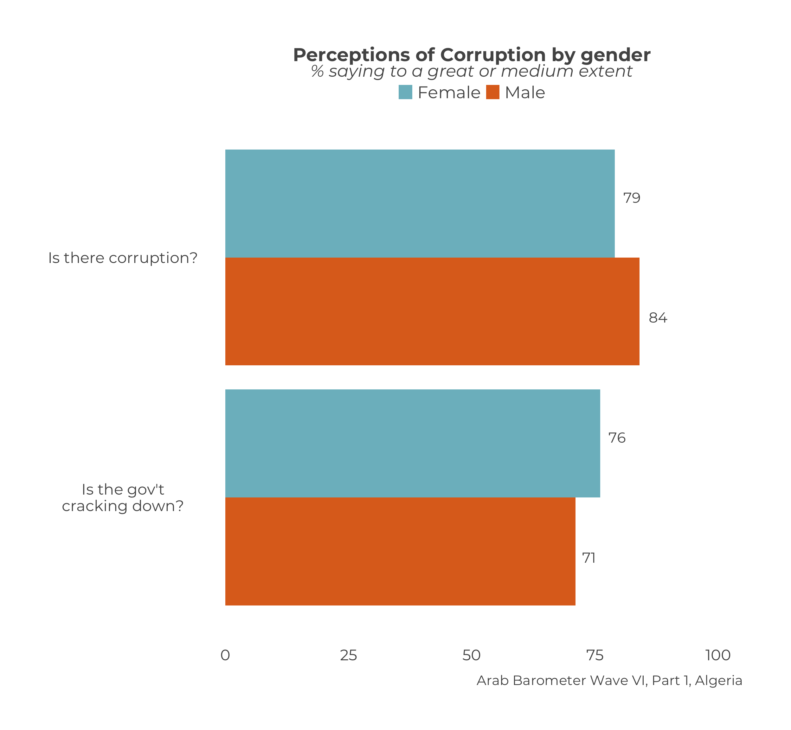

Chapter 7 Demographic Single Country Multi-Question Plots
This chapter describes how to create a demographic summary of multiple questions for a single country on the same plot.
As you (hopefully) know, there are two types of summaries/plots that you can create to show multiple questions on the same plot for a single country: a short summary and a long summary. If you are not familiar with these types, or still find them confusing, please see Chapter 12.
There is only one type of demographic summary for multiple questions. The plot you create shows the demographic breakdown of a short summary.
TL;DR
At the end, your code will look like the following:
questions_2_compare <- c("Q210",
"Q211")
question_labels <- c("Is there corruption?",
"Is the gov't cracking down?")
calculate_ind_smry_multiq_dem(survey1,
"gender",
questions_2_compare,
question_labels,
"Algeria") |>
plot_ind_smry_multiq_dem(.title = "Perceptions of Corruption by gender",
.subtitle = "% saying to a great or medium extent",
.caption = "Arab Barometer Wave VI, Part 1, Algeria")And will produce the following graph:
## Warning: `position_dodge()` requires non-overlapping x intervals.
Let’s go!
7.1 Prep Work
The preparation work done here is exactly the same as that done here in Chapter 12 for creating non-demographic multi-question graphs.
7.1.1 Question Vector
First create a vector of questions you want to include on your graph. For the example in this chapter we are comparing questions Q210 and Q211. We put the names of those variables in a vector and save that vector as an object.
Now the variables we want to graph as saved to the object questions_2_compare in a vector.
7.1.2 Question Labels
The next step is to create a vector of labels for the questions. This is the text that will display on the y-axis. The labels should appear in the same order as they variables they are referring to.
question_labels <- c(
"Is there corruption?", # Text for Q210
"Is the gov't cracking down?" # Text for Q211
)The object question_labels represents the text that will serve to label the responses on the graph.
7.2 Create a Summary
Just like the last chapter (and many others before it), we begin by creating a data frame that summarizes our questions. To do that, we use the function calculate_ind_smry_multiq_dem().
The function require the same five main parameters: (1) the data you are using, (2) the demographic you want to group the data by, (3) a vector of the variables you want to plot (not a list), (4) how you want the variables to be labeled in the legend, and (5) the country you want to plot it for. This is the same list of required variables as calculate_ind_multiq_smry_short() and calculate_ind_multiq_smry_long() with one additional parameter specifying the demographic.
In the example for this chapter, the data we are using is survey1; the demographic we want to group the data by is "gender"; the variables we want to plot are in the vector questions_2_compare; the labels we want to give them are in questions_labels; and the country we want to plot the data for is "Algeria".
calculate_ind_smry_multiq_dem(survey1, # Data
"gender", # Demographic
questions_2_compare, # Variable vector
question_labels, # Variable labels
"Algeria" # Country
)## # A tibble: 4 × 4
## # Groups: Country [1]
## Country gender Question Percent
## <chr> <chr> <chr+lbl> <dbl>
## 1 Algeria Female Q210 [Is there corruption?] 79
## 2 Algeria Female Q211 [Is the gov't cracking down?] 76
## 3 Algeria Male Q210 [Is there corruption?] 84
## 4 Algeria Male Q211 [Is the gov't cracking down?] 71Notice the values of the column "Question" are labeled with the values we supplied to the parameter .question_labels. These are used for the legend.
Let’s save the output to an object and graph the summary.
ind_multiq_dem_smry <- calculate_ind_smry_multiq_dem(survey1,
"gender",
questions_2_compare,
question_labels,
"Algeria"
)Our summary is now saved to the object ind_multiq_dem_smry.
7.3 Plot a Multiquestion Demographic Summary for an Individual Country
To plot a “short” summary, use the function plot_ind_smry_multiq_dem(). The function only requires one input: a data frame created by calculate_ind_smry_multiq_dem(). In our example, we saved this data frame as ind_multiq_dem_smry.
plot_ind_smry_multiq_dem(ind_multiq_dem_smry)
## Warning in title_function(.var = rlang::as_label(question), .title = .title, : ✖ There is currently no title for `Question`.
## ℹ Please specify your own until this has been corrected.
## Warning in subtitle_function(.var = rlang::as_label(question), .subtitle = .subtitle, : ✖ There is currently no subtitle for `Question`.
## ℹ Please specify your own until this has been corrected.
## Warning: `position_dodge()` requires non-overlapping x intervals.There are a few glaringly obvious issues to address here. The warnings and the lack of titles. The two are related.
A warning does not mean something is wrong. Rather, it is the computer letting you know that it tried its best, but something may still be off. Two of these warnings relate to the absence of a title and subtitle in this plot. Those will disappear once we provide a title and subtitle. The third is generated by the package ggplot2 and will not go away. You can ignore it, which is what the rest of this chapter will do. To read more about these warnings, refer to the section How do I Understand (some) Messages, Warnings, and Errors?.
Now let’s supply the title, subtitle, and caption by specifying the parameters .title, .subtitle, and .caption.
plot_ind_smry_multiq_dem(ind_multiq_dem_smry,
.title = "Perceptions of Corruption by gender",
.subtitle = "% saying to a great or medium extent",
.caption = "Arab Barometer Wave VI, Part 1, Algeria"
)
We have our graph.
Recalling that ind_multiq_dem_smry is just an object holding the output of our function calculate_ind_smry_multiq_dem() and its inputs, we can chain the two functions together.
calculate_ind_smry_multiq_dem(survey1,
"gender",
questions_2_compare,
question_labels,
"Algeria"
) |>
plot_ind_smry_multiq_dem(.title = "Perceptions of Corruption by gender",
.subtitle = "% saying to a great or medium extent",
.caption = "Arab Barometer Wave VI, Part 1, Algeria"
)
If we include the prep work we did in our code chunk, we end with the same code from our initial example in the TL;DR section.

7.4 Extras
7.4.1 Setting Colors
By default, the colors for the graph are randomly selected from ArabBarometer_clr. To set the colors of the graph, supply a vector of hex codes or named Arab Barometer brand colors to the parameter .color_choice.
Order matters. If you want certain questions to have certain colors, you must put the colors you want in the same order of the questions. For example, if you want Q210 to be "AB purple" (#796391) and Q211 to be "AB yellow" (#FBA950), you must provide the color vector as c("AB purple","AB yellow"), since the questions are in the order c("Q210","Q211").
7.4.2 Warnings
There are several points in this code when warnings or messages will appear even if you are using the code correctly. No need to panic. You can read about all of the messages and warnings that may appear even when the code is correct in the section How do I Understand (some) Messages, Warnings, and Errors.
The function plot_ind_smry_multiq_dem() will produce a position_dodge() warning. You can read a bit about that here.
If you do not supply a title or subtitle, a plot will still be created but you will receive a missing title and/or subtitle warning. You can read more about this here.